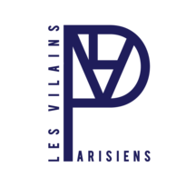

During this DIY clothes workshop, you will learn with designer Simon P. Jacquemus to make your own clothes using upcycled fabrics. Either coming from LVP warehouses, or from your own closet, you will give a new green life to those products. At the end of the session, you will enjoy a friendly moment discussing with both Simon, and LVP founder, Estelle Imbert. All the patterns are then sent by email so that you can make it again at home.
Simon Porte Jacquemus is a French fashion designer and the founder of the trending Jacquemus fashion label. He is highly involved in fighting against climate change and is an activist in the transition to a more sustainable fashion. He will share his precisous knowledge and his best patterns with you in order to create upcycled fashion pieces.
Les Vilains Parisiens is a French fashion brand created by Estelle Imbert, an entrepreneur passionate by fashion coming from the French South West. The designer worked during severel years in French and Italian fashion Maisons, before lauching her own project. As a upcycling pioneer, LVP will sponsor this workshop by bringing to you the best pieces of recycled fabrics.
